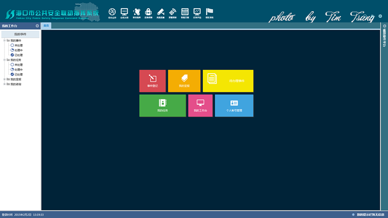
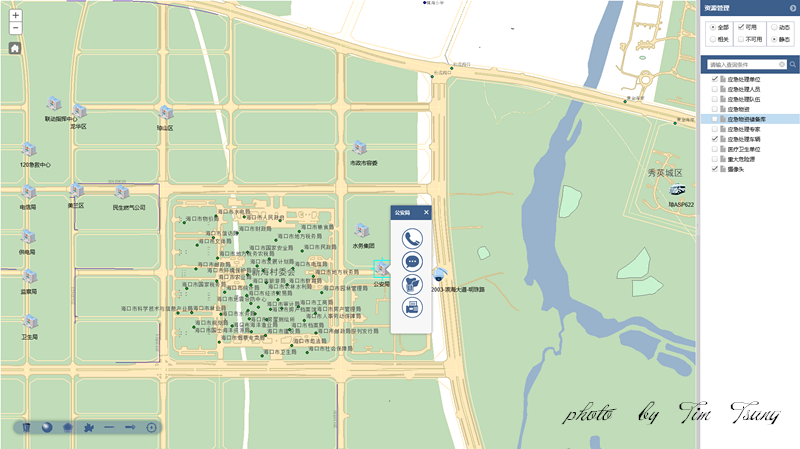
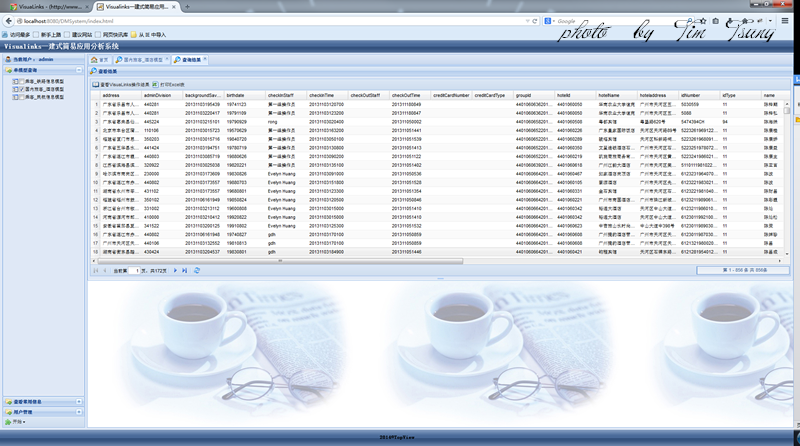

一、海口市公共安全联动指挥系统
该系统集成了几大厂商的不同系统：视频监控与会议、网络电话与传真、GPS车辆导航；同时根据国家对应急指挥调度系统的规定，拥有一套应急指挥调度的完善的流程，并结合GIS技术，以地图的方式实现资源的展示与调度。本项目第一版本已上线使用。

二、广州外国语学校招生报名系统
该系统是为广州外国语学校小升初报名使用的系统，提供小升初报名、审核等功能。
三、Visual links一建式简易应用系统
该系统是基于大数据处理软件Visual links，在其基础上开发WEB软件，简化复杂操作。该系统的功能主要包括：模型建立、模型读取、综合查询、同行分析、记录保存、数据导入导出，Visual links结果展示。